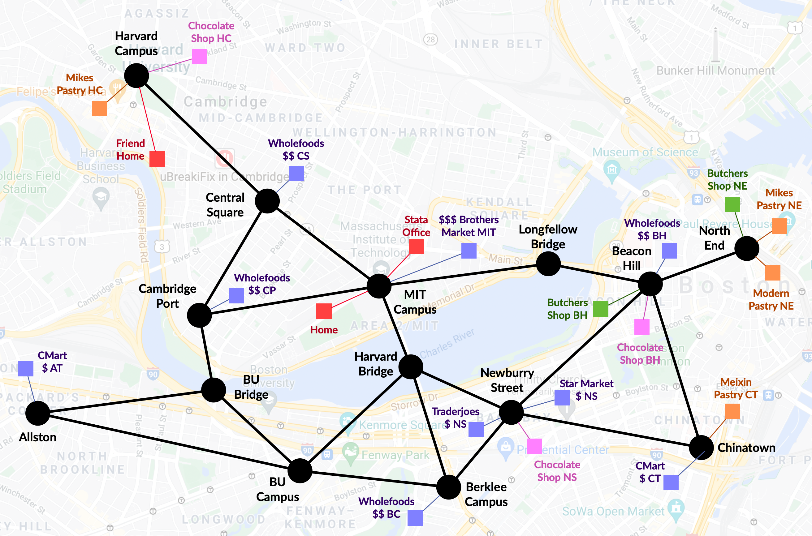

Grocery shopping domain#
The grocery shopping domain is designed where action costs depend on the mode of transportation, distance between locations, and places to shop.
The great city of Boston is simulated:

Types and Predicates#
- Transportation happens between
locations, which are marked either by dots or squares - An
area, represented by a black dot, is a largelocation. - Areas contain precise
locations, which are represented by colored squares. Each preciselocationalso contains a unmarkedparkinglot, which is also of typelocation
Action costs#
Cost of traveling time:#
- Between areas, cost of driving is 4, while cost of walking is 8
- Between an area and its locations, cost of driving or walking is 2
- Between locations in an area, cost of driving or walking is 4 = 2 + 2
Cost of shopping:#
- In terms of pricing,
brothers-market(1) >wholefoods(4) >traderjoes/star-market/c-mart(4), whose costs are 30, 20, 10 for each iterm respectively - At
butchers-shop(2), each item costs 30 - At
chocolate-shop(3), each item costs 20 - At
pastry(4), each item costs 10
Other costs:#
- Cost of parking is 5 anywhere
- Costs of other operators are 1
Category of shopping:#
- All markets sell
ingredient - Places that sell
utensil:wholefoods,star-market,cmart - Places that sell
lambchop:butchers - Places that sell
bread:pastry - Places that sell
alcohol:brothers-market,wholefoods,star-market - Places that sell
pasta:brothers-market - Places that sell
chocolate:chocolate-shop cmartdoesn't sellseafoodtraderjoesdoesn't sellbaverages
Experimental results on action costs#
There are 9 places that sell veggie1 and egg1, and 2 places that sell lamb-chop1
-
shop-veggie.pddlrequires purchase ofveggie1;shop-omelette.pddlrequires purchase ofveggies1andegg1lama-firtchose to walk to Brother's Market, which is close but expensivelamachose to drive to Trader Joe's Newburry Street, which is farther but cheapest
-
shop-lamb-plate.pddlrequires purchase ofveggies1andlamb-chop1:- Both chose to buy
lambchopat Butcher's Shop Beason Hill lama-firtchose to buyveggie1at Brother's Marketlamachose to buyveggie1at Trader Joe's Newburry Street
- Both chose to buy
t run_name var op axiom plan cost parse search state
------ ------------------------------- ----- ---- ------- ------ ------ ------- ----------- -------
115254 shop_veggies, pln=lama_first 148 392 170 8 75 0.089 0.00033575 11
115255 shop_veggies, pln=lama 148 392 170 18 67 0.086 0.0968291 3191
------ ------------------------------- ----- ---- ------- ------ ------ ------- ----------- -------
115255 shop_omelette, pln=lama_first 159 402 170 10 106 0.088 0.000423083 14
115256 shop_omelette, pln=lama 159 402 170 20 78 0.087 0.390508 12204
------ ------------------------------- ----- ---- ------- ------ ------ ------- ----------- -------
115256 shop_lamb_plate, pln=lama_first 154 395 172 22 310 0.089 0.000801125 28
115257 shop_lamb_plate, pln=lama 154 395 172 27 122 0.087 0.410943 12599